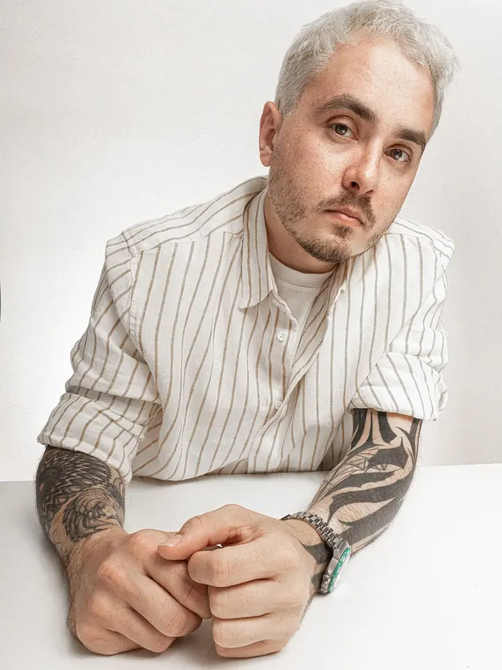
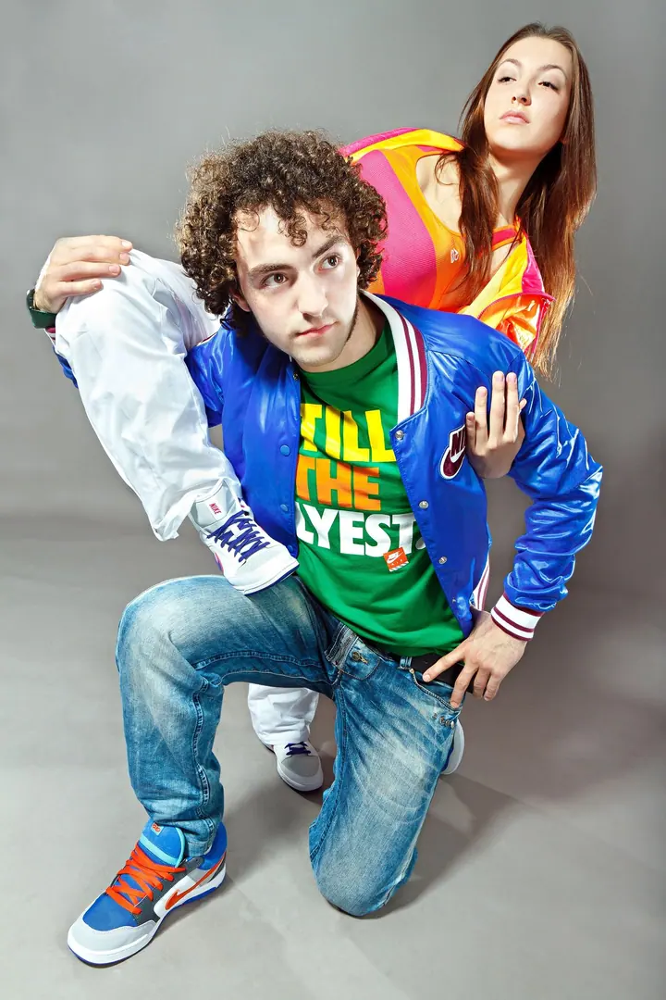

Herecké headshoty a portréty
Headshoty, které vám pomohou zaujmout castingovky a vystihnou váš typ. Při delším focení vystřídáme 2–3 outfity nebo charaktery.





Jmenuji se Artem Mishukov a ve svém pražském ateliéru fotím portréty pro herce, tanečníky i firmy a podnikatele. Stavím na poctivém světle, minimální stylizaci a jemné retuši. Focení probíhá v klidu a snímky spolu průběžně kontrolujeme na monitoru.
Více o mně„Pracuji s jednoduchou myšlenkou: když z obrazu odstraníte vše nepodstatné, zůstane člověk.“
— Artem Mishukov
Headshoty, které vám pomohou zaujmout castingovky a vystihnou váš typ. Při delším focení vystřídáme 2–3 outfity nebo charaktery.
Profesionální ateliérové i exteriérové portréty manažerů, týmů a podnikatelů pro LinkedIn, weby a PR. Fotím v ateliéru nebo přímo u vás ve firmě.
Portréty i pohybové fotografie, které zachytí techniku, energii a osobnost tanečníka.
Krátké 15minutové focení v ateliéru, fotky si vyberete hned na místě. Tři upravené portréty máte do 2 dnů.
Pracuji s jednoduchou myšlenkou: když z obrazu odstraníte vše nepodstatné, zůstane člověk. Od roku 2006 vytvářím ateliérové portréty s důrazem na střídmost a eleganci. Chci, aby vznikly upřímné a přirozené portréty, ne jen naučené pózy.
Během své kariéry jsem fotil svatby a eventy, věnoval se produktové a food fotografii a spolupracoval s tanečníky, komiky i univerzitami. Díky tomu umím citlivě vést lidi, kteří se neradi fotí, a dosáhnout konzistentních výsledků v různých podmínkách.
V Praze působím od roku 2012. Fotím ve svém ateliéru v Mánesově ulici na Praze 2 i na lokaci. Vedle zakázek se věnuji volné tvorbě, ve které zkoumám světlo, emoce a nové vizuální nápady.
Před focením si upřesníme, k čemu fotky potřebujete, jestli pro LinkedIn, firemní web nebo herecké portfolio. U větších balíčků připravíme i moodboard a reference.
V ateliéru nebo na lokaci vás přirozeně vedu, takže nemusíte vědět, jak pózovat. Atmosféra je klidná a soustředěná.
Snímky se během focení zobrazují na monitoru, takže je kontrolujeme průběžně. Finální fotografie si můžete vybrat hned po focení.
Vybrané portréty profesionálně upravím a jemně zretušuji, aby byly připravené k okamžitému použití. U balíčku CV a LinkedIn je máte do 2 dnů.
Určitě. S lidmi, kteří se neradi fotí, pracuji často. Během focení vás vedu a fotky průběžně kontrolujeme na monitoru, takže víte, jak vypadáte.
Balíček CV a LinkedIn stojí 800 Kč, Basic Package pro herecké headshoty nebo business portréty 2 500 Kč. Advanced Package s konzultací a stylingem nacením individuálně.
Ano. Firemní headshoty začínají na 200 Kč za osobu, pokročilé portréty na 500 Kč za osobu, minimální objednávka je 4 000 Kč. Přijedu za vámi, mimo Prahu účtuji cestovné 8 Kč/km.
Ve svém ateliéru v Mánesově 1175/48 na Praze 2, nebo na lokaci, kterou spolu vybereme.